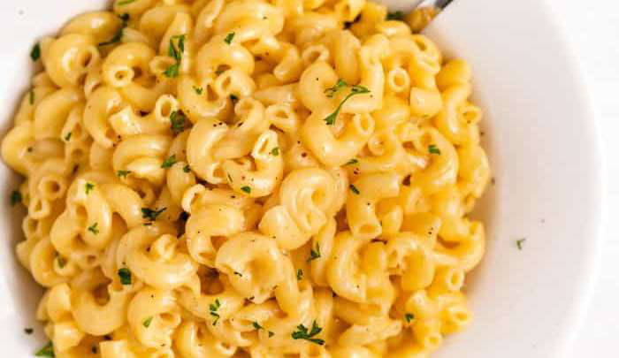

Mac & Cheese
Ingredients
- 80 g San Remo Pasta Pro Multigrain
- Protein Pasta (or just macaroni for you traditionalists)
- 100 ml Skim Milk
- 25 g Philadelphia Light Cream Cheese
- Light Laughing Cow Cheese
- 20 g Light Mozzarella Cheese (Coles)
- 5 ml Parsley Flake
Instructions
- In a large saucepan, cook pasta according to package instructions.
- While the pasta is cooking on a separate pan on high heat add 100ml of unsweetened almond milk, 25g of Philadelphia light cream cheese & 1 serving of light laughing cow cheese.
- After 30 seconds season with 1 tsp of salt, 1/2 tsp of pepper & 1/2 tsp of parsley flakes then add 20g of light mozzarella cheese & stir slowly on medium heat for a few minutes until it thickens.
- Once the cheese is bubbling & slightly thicker, strain the pasta & add it to the other pan with melted cheese & stir everything together on medium heat so the pasta & cheese combines. Keep stirring until the cheese is as thick as possible & stringy.
- Sprinkle with 1/2 tsp of parsley flakes
Source PDF page 28